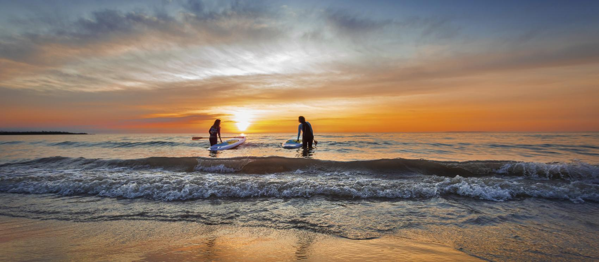
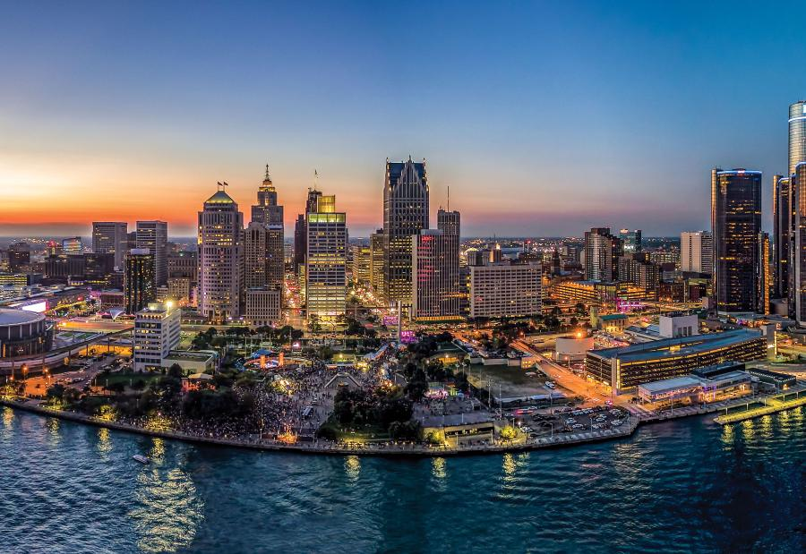
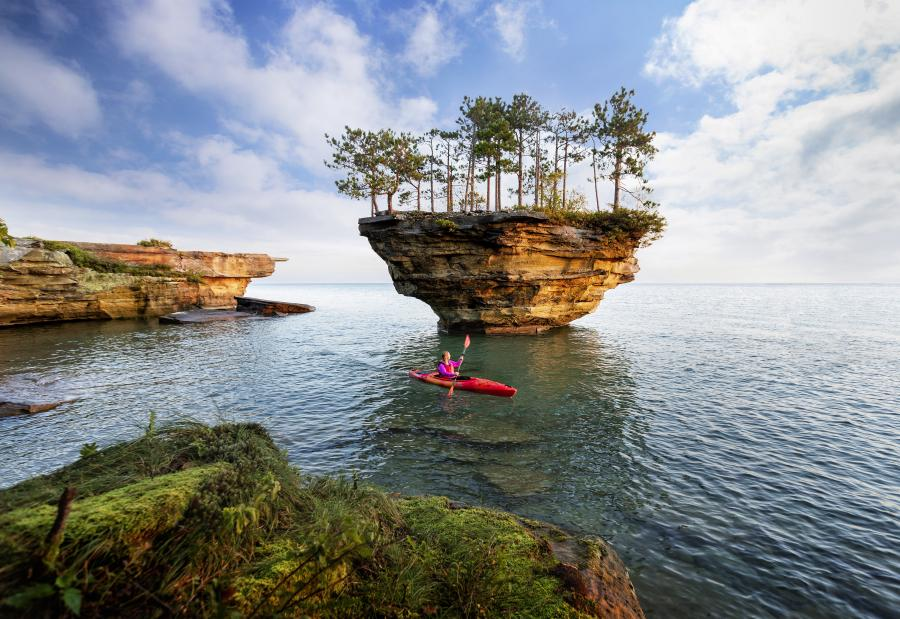
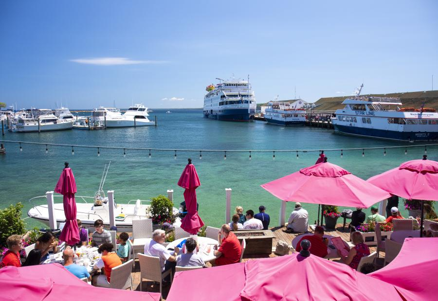
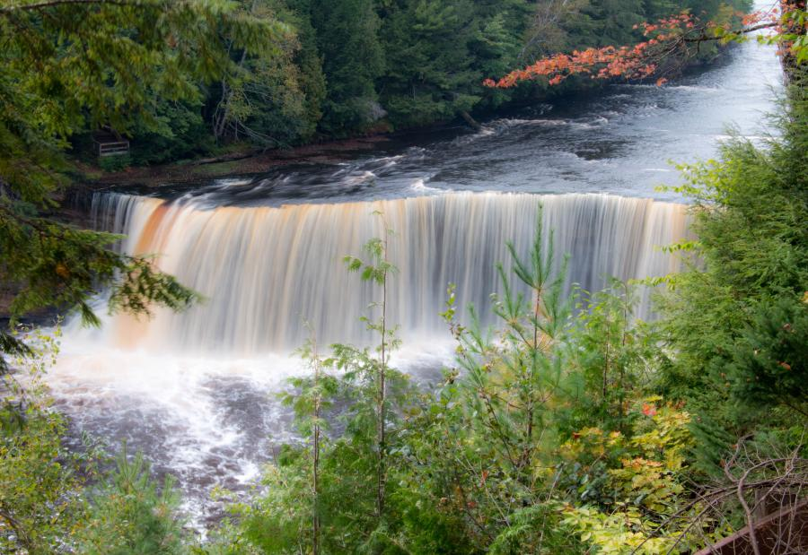
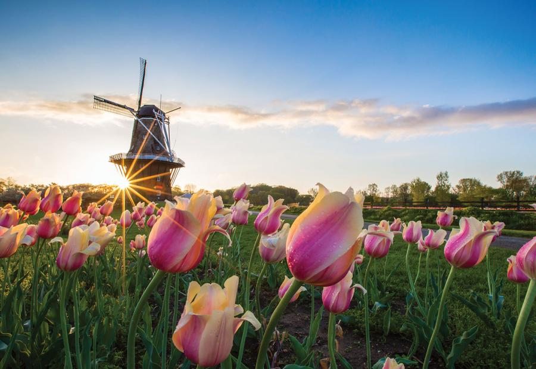
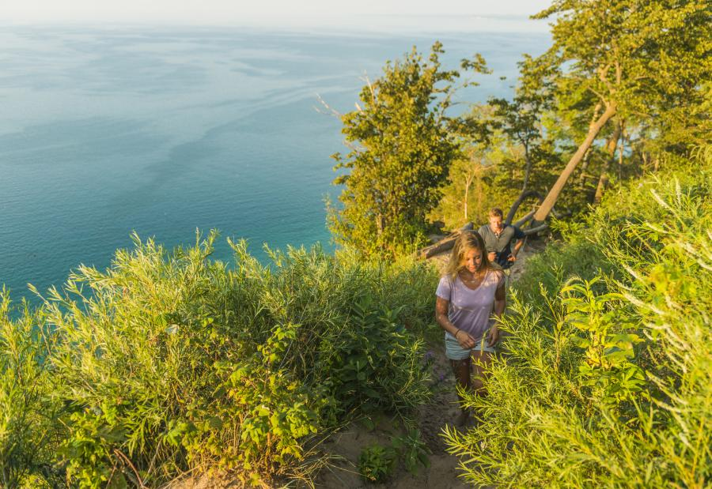
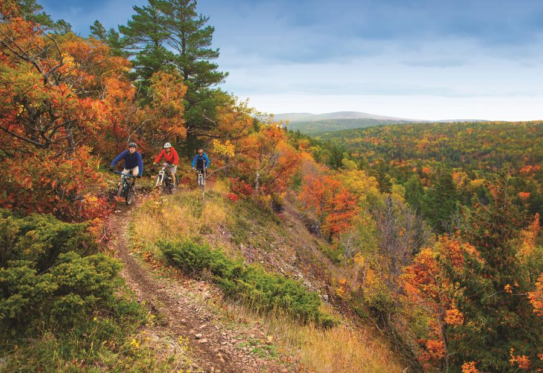
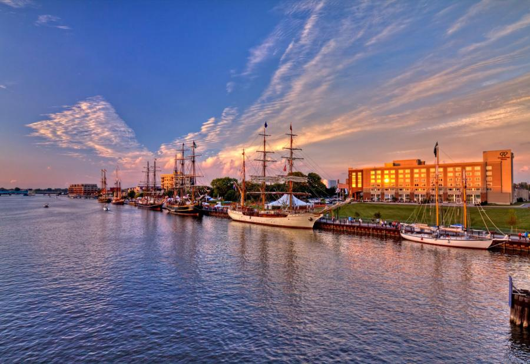

-
미국 공식 웹사이트 미시간주

해가 떠오를 무렵 앨피너의 휴런호에서 타는 스탠드업 패들보드 -
미국 공식 웹사이트 미시간주

데날리 국립공원을 지나고 있는 카리부 -
미국 공식 웹사이트 미시간주

미니애폴리스의 밥 딜런을 기리는 벽화 앞에서 포즈 취해보기 -
미국 공식 웹사이트 미시간주

호숫가의 유서 깊은 그랜드 뷰 로지 스파와 골프 리조트의 평화로운 야경 -
미국 공식 웹사이트 미시간주

위노나 근처 그레이트 리버 로드의 가을 풍경 -
미국 공식 웹사이트 미시간주

슈피리어호와 덜루스를 잇는 에어리얼 리프트 다리를 지나는 배 -
미국 공식 웹사이트 미시간주

몰 오브 아메리카의 니켈로디언 유니버스 -
미국 공식 웹사이트 미시간주

통유리 너머 보이는 와이즈먼 미술관 -
미국 공식 웹사이트 미시간주

소복이 눈이 쌓인 미니애폴리스 -
미국 공식 웹사이트 미시간주
해가 지는 바운더리 워터스에서 카누를 타고 낚시해보기
 미시간주 프랑켄머스: 미국의 작은 바이에른을 탐험하는 3가지 방법
미시간주 프랑켄머스: 미국의 작은 바이에른을 탐험하는 3가지 방법
 미국 여행 정보
미국 여행 정보